Model Comparison
Raw-logit adjusted models remove whole dummy-variable groups that fail nested likelihood-ratio tests, plus ungrouped indicators that fail the Wald screen. The WoE scorecard model is shown last as the explainable scorecard challenger.
| model | features | roc_auc | average_precision | brier_score | ks_statistic | threshold_strategy | threshold | f1_score | expected_profit_per_case | aic | bic | mcfadden_r2 |
|---|---|---|---|---|---|---|---|---|---|---|---|---|
| Raw logit full model | 17 | 0.8337 | 0.6503 | 0.1200 | 0.5148 | expected_profit_loss | 0.3407 | 0.6029 | 0.0352 | 7,570.3212 | 7,699.5144 | 0.2595 |
| Raw logit adjusted model | 12 | 0.8331 | 0.6479 | 0.1203 | 0.5110 | expected_profit_loss | 0.3408 | 0.5980 | 0.0335 | 7,564.0908 | 7,657.3971 | 0.2591 |
| Raw logit representative-sample model | 12 | 0.8326 | 0.6464 | 0.1205 | 0.5105 | expected_profit_loss | 0.3252 | 0.5958 | 0.0330 | 7,579.1170 | 7,672.4233 | 0.2577 |
| Raw logit weighted model | 12 | 0.7860 | 0.4982 | 0.1939 | 0.4484 | expected_profit_loss | 0.5784 | 0.5307 | 0.0094 | 11,040.6176 | 11,133.9238 | -0.0826 |
| WoE scorecard model | 6 | 0.8449 | 0.6438 | 0.1178 | 0.5442 | expected_profit_loss | 0.2619 | 0.6094 | 0.0385 | 7,316.6785 | 7,366.9203 | 0.2823 |
Correlation Analysis
Before estimating the first logit model, predictors were screened for highly correlated pairs. For each flagged pair, the more redundant predictor was removed; target correlation is retained as supporting context.
| removed predictor | kept predictor | pairwise |correlation| | removed mean |correlation| | kept mean |correlation| | removed |target correlation| | kept |target correlation| | threshold |
|---|---|---|---|---|---|---|---|
| loan_grade_rank | loan_int_rate | 0.8895 | 0.1133 | 0.1091 | 0.3736 | 0.3201 | 0.7000 |
| person_age | cb_person_cred_hist_length | 0.8775 | 0.0854 | 0.0796 | 0.0186 | 0.0135 | 0.7000 |
Sampling and Weighting Diagnostics
Representative Sample
Sampled 11,287 of 22,576 rows (50.0%) using stratified proportional sampling.
| stratum | full_count | sample_count | full_share | sample_share | share_diff | retained_share |
|---|---|---|---|---|---|---|
| 0 | EDUCATION | RENT | 1699 | 850 | 0.0753 | 0.0753 | 0.0001 | 0.5003 |
| 0 | PERSONAL | RENT | 1279 | 640 | 0.0567 | 0.0567 | 0.0000 | 0.5004 |
| 1 | EDUCATION | RENT | 583 | 292 | 0.0258 | 0.0259 | 0.0000 | 0.5009 |
| 1 | HOMEIMPROVEMENT | RENT | 467 | 234 | 0.0207 | 0.0207 | 0.0000 | 0.5011 |
| 0 | EDUCATION | OWN | 355 | 178 | 0.0157 | 0.0158 | 0.0000 | 0.5014 |
| 1 | DEBTCONSOLIDATION | MORTGAGE | 315 | 158 | 0.0140 | 0.0140 | 0.0000 | 0.5016 |
| 0 | MEDICAL | OWN | 259 | 130 | 0.0115 | 0.0115 | 0.0000 | 0.5019 |
| 1 | HOMEIMPROVEMENT | OWN | 27 | 14 | 0.0012 | 0.0012 | 0.0000 | 0.5185 |
| 1 | VENTURE | OWN | 23 | 12 | 0.0010 | 0.0011 | 0.0000 | 0.5217 |
| 0 | EDUCATION | OTHER | 7 | 4 | 0.0003 | 0.0004 | 0.0000 | 0.5714 |
| 1 | HOMEIMPROVEMENT | OTHER | 3 | 2 | 0.0001 | 0.0002 | 0.0000 | 0.6667 |
| 0 | PERSONAL | OTHER | 3 | 2 | 0.0001 | 0.0002 | 0.0000 | 0.6667 |
| 1 | VENTURE | OTHER | 1 | 1 | 0.0000 | 0.0001 | 0.0000 | 1.0000 |
| 1 | EDUCATION | OTHER | 5 | 2 | 0.0002 | 0.0002 | -0.0000 | 0.4000 |
| 1 | MEDICAL | OTHER | 5 | 2 | 0.0002 | 0.0002 | -0.0000 | 0.4000 |
| 0 | DEBTCONSOLIDATION | OTHER | 5 | 2 | 0.0002 | 0.0002 | -0.0000 | 0.4000 |
| 0 | VENTURE | OTHER | 17 | 8 | 0.0008 | 0.0007 | -0.0000 | 0.4706 |
| 1 | DEBTCONSOLIDATION | OWN | 21 | 10 | 0.0009 | 0.0009 | -0.0000 | 0.4762 |
| 0 | HOMEIMPROVEMENT | OWN | 185 | 92 | 0.0082 | 0.0082 | -0.0000 | 0.4973 |
| 0 | PERSONAL | OWN | 293 | 146 | 0.0130 | 0.0129 | -0.0000 | 0.4983 |
Numeric Balance
| feature | full_mean | sample_mean | full_median | sample_median | standardized_mean_diff |
|---|---|---|---|---|---|
| loan_int_rate | 11.0024 | 10.9690 | 10.9900 | 10.9900 | -0.0109 |
| cb_person_cred_hist_length | 5.7547 | 5.7961 | 4.0000 | 4.0000 | 0.0103 |
| person_age | 27.6439 | 27.6970 | 26.0000 | 26.0000 | 0.0086 |
| person_emp_length | 4.7718 | 4.7419 | 4.0000 | 4.0000 | -0.0072 |
| loan_amnt | 9,491.5463 | 9,534.8609 | 8,000.0000 | 8,000.0000 | 0.0070 |
| person_income | 62,849.1208 | 63,085.0149 | 55,000.0000 | 55,000.0000 | 0.0069 |
Inverse-Frequency Weights
Mean weight 1.0000; min 0.2786; max 671.9167; effective sample size 841.
| stratum | count | mean_weight | min_weight | max_weight | total_weight |
|---|---|---|---|---|---|
| 1 | VENTURE | OTHER | 1 | 671.9167 | 671.9167 | 671.9167 | 671.9167 |
| 1 | HOMEIMPROVEMENT | OTHER | 3 | 223.9722 | 223.9722 | 223.9722 | 671.9167 |
| 1 | EDUCATION | OTHER | 6 | 111.9861 | 111.9861 | 111.9861 | 671.9167 |
| 1 | MEDICAL | OTHER | 7 | 95.9881 | 95.9881 | 95.9881 | 671.9167 |
| 0 | HOMEIMPROVEMENT | OTHER | 8 | 83.9896 | 83.9896 | 83.9896 | 671.9167 |
| 1 | PERSONAL | OTHER | 8 | 83.9896 | 83.9896 | 83.9896 | 671.9167 |
| 1 | DEBTCONSOLIDATION | OTHER | 8 | 83.9896 | 83.9896 | 83.9896 | 671.9167 |
| 0 | DEBTCONSOLIDATION | OTHER | 9 | 74.6574 | 74.6574 | 74.6574 | 671.9167 |
| 0 | MEDICAL | OTHER | 10 | 67.1917 | 67.1917 | 67.1917 | 671.9167 |
| 0 | PERSONAL | OTHER | 10 | 67.1917 | 67.1917 | 67.1917 | 671.9167 |
| 0 | EDUCATION | OTHER | 10 | 67.1917 | 67.1917 | 67.1917 | 671.9167 |
| 0 | VENTURE | OTHER | 24 | 27.9965 | 27.9965 | 27.9965 | 671.9167 |
| 1 | PERSONAL | OWN | 28 | 23.9970 | 23.9970 | 23.9970 | 671.9167 |
| 1 | DEBTCONSOLIDATION | OWN | 28 | 23.9970 | 23.9970 | 23.9970 | 671.9167 |
| 1 | EDUCATION | OWN | 29 | 23.1695 | 23.1695 | 23.1695 | 671.9167 |
| 1 | VENTURE | OWN | 31 | 21.6747 | 21.6747 | 21.6747 | 671.9167 |
| 1 | HOMEIMPROVEMENT | OWN | 34 | 19.7623 | 19.7623 | 19.7623 | 671.9167 |
| 1 | MEDICAL | OWN | 42 | 15.9980 | 15.9980 | 15.9980 | 671.9167 |
| 0 | DEBTCONSOLIDATION | OWN | 44 | 15.2708 | 15.2708 | 15.2708 | 671.9167 |
| 1 | VENTURE | MORTGAGE | 103 | 6.5235 | 6.5235 | 6.5235 | 671.9167 |
Cross-Validation
Stratified folds estimate out-of-sample stability. Higher is better except for Brier score.
| model | metric | mean | std | min | max |
|---|---|---|---|---|---|
| Raw logit representative-sample model | roc_auc | 0.8372 | 0.0047 | 0.8322 | 0.8434 |
| Raw logit representative-sample model | average_precision | 0.6564 | 0.0039 | 0.6520 | 0.6605 |
| Raw logit representative-sample model | brier_score | 0.1189 | 0.0006 | 0.1178 | 0.1193 |
| Raw logit representative-sample model | ks_statistic | 0.5234 | 0.0077 | 0.5134 | 0.5294 |
| Raw logit representative-sample model | f1_score | 0.5960 | 0.0049 | 0.5908 | 0.6034 |
| Raw logit representative-sample model | expected_profit_per_case | 0.0330 | 0.0016 | 0.0313 | 0.0353 |
| Raw logit representative-sample model | threshold | 0.3205 | 0.0264 | 0.2978 | 0.3520 |
Fold Results
| model | fold | n_test | threshold_strategy | recommended_threshold_strategy | threshold | roc_auc | average_precision | brier_score | ks_statistic | accuracy | precision | recall | f1_score | expected_profit | expected_profit_per_case |
|---|---|---|---|---|---|---|---|---|---|---|---|---|---|---|---|
| Raw logit representative-sample model | 1 | 6451 | expected_profit_loss | expected_profit_loss | 0.3051 | 0.8379 | 0.6574 | 0.1191 | 0.5167 | 0.7993 | 0.5340 | 0.6612 | 0.5908 | 202.0000 | 0.0313 |
| Raw logit representative-sample model | 2 | 6451 | expected_profit_loss | expected_profit_loss | 0.3011 | 0.8395 | 0.6526 | 0.1193 | 0.5294 | 0.7968 | 0.5279 | 0.6888 | 0.5977 | 219.0000 | 0.0339 |
| Raw logit representative-sample model | 3 | 6450 | expected_profit_loss | expected_profit_loss | 0.3463 | 0.8329 | 0.6595 | 0.1191 | 0.5134 | 0.8116 | 0.5633 | 0.6259 | 0.5930 | 203.8000 | 0.0316 |
| Raw logit representative-sample model | 4 | 6450 | expected_profit_loss | expected_profit_loss | 0.3520 | 0.8322 | 0.6520 | 0.1193 | 0.5294 | 0.8140 | 0.5660 | 0.6461 | 0.6034 | 227.4000 | 0.0353 |
| Raw logit representative-sample model | 5 | 6450 | expected_profit_loss | expected_profit_loss | 0.2978 | 0.8434 | 0.6605 | 0.1178 | 0.5282 | 0.7935 | 0.5216 | 0.6921 | 0.5949 | 213.6000 | 0.0331 |
Segment Stability
Segment metrics show whether sampling or weighting improves stability across portfolio groups.
| model | segment | value | count | default_rate | mean_score | calibration_gap | roc_auc | average_precision | brier_score |
|---|---|---|---|---|---|---|---|---|---|
| Raw logit adjusted model | loan_intent | DEBTCONSOLIDATION | 1528 | 0.2860 | 0.2976 | 0.0116 | 0.8428 | 0.7384 | 0.1361 |
| Raw logit full model | loan_intent | DEBTCONSOLIDATION | 1528 | 0.2860 | 0.3260 | 0.0400 | 0.8395 | 0.7354 | 0.1399 |
| Raw logit representative-sample model | loan_intent | DEBTCONSOLIDATION | 1528 | 0.2860 | 0.3138 | 0.0278 | 0.8438 | 0.7398 | 0.1369 |
| Raw logit weighted model | loan_intent | DEBTCONSOLIDATION | 1528 | 0.2860 | 0.4080 | 0.1220 | 0.8175 | 0.6600 | 0.1670 |
| WoE scorecard model | loan_intent | DEBTCONSOLIDATION | 1528 | 0.2860 | 0.2932 | 0.0072 | 0.8727 | 0.7467 | 0.1259 |
| Raw logit adjusted model | loan_intent | EDUCATION | 1946 | 0.1783 | 0.1700 | -0.0083 | 0.7997 | 0.5278 | 0.1149 |
| Raw logit full model | loan_intent | EDUCATION | 1946 | 0.1783 | 0.1743 | -0.0040 | 0.8030 | 0.5379 | 0.1139 |
| Raw logit representative-sample model | loan_intent | EDUCATION | 1946 | 0.1783 | 0.1693 | -0.0091 | 0.7979 | 0.5192 | 0.1157 |
| Raw logit weighted model | loan_intent | EDUCATION | 1946 | 0.1783 | 0.4232 | 0.2449 | 0.7436 | 0.3597 | 0.2045 |
| WoE scorecard model | loan_intent | EDUCATION | 1946 | 0.1783 | 0.1727 | -0.0056 | 0.8074 | 0.5224 | 0.1146 |
| Raw logit adjusted model | loan_intent | HOMEIMPROVEMENT | 1036 | 0.2606 | 0.2647 | 0.0040 | 0.8175 | 0.6710 | 0.1361 |
| Raw logit full model | loan_intent | HOMEIMPROVEMENT | 1036 | 0.2606 | 0.2588 | -0.0018 | 0.8237 | 0.6835 | 0.1333 |
| Raw logit representative-sample model | loan_intent | HOMEIMPROVEMENT | 1036 | 0.2606 | 0.2525 | -0.0081 | 0.8175 | 0.6697 | 0.1360 |
| Raw logit weighted model | loan_intent | HOMEIMPROVEMENT | 1036 | 0.2606 | 0.4432 | 0.1826 | 0.7686 | 0.5401 | 0.2004 |
| WoE scorecard model | loan_intent | HOMEIMPROVEMENT | 1036 | 0.2606 | 0.2421 | -0.0186 | 0.8220 | 0.6830 | 0.1348 |
| Raw logit adjusted model | loan_intent | MEDICAL | 1795 | 0.2769 | 0.2542 | -0.0227 | 0.8072 | 0.6803 | 0.1459 |
| Raw logit full model | loan_intent | MEDICAL | 1795 | 0.2769 | 0.2499 | -0.0270 | 0.8070 | 0.6802 | 0.1463 |
| Raw logit representative-sample model | loan_intent | MEDICAL | 1795 | 0.2769 | 0.2598 | -0.0170 | 0.8090 | 0.6825 | 0.1452 |
| Raw logit weighted model | loan_intent | MEDICAL | 1795 | 0.2769 | 0.4381 | 0.1613 | 0.8052 | 0.6421 | 0.1811 |
| WoE scorecard model | loan_intent | MEDICAL | 1795 | 0.2769 | 0.2696 | -0.0072 | 0.8230 | 0.6779 | 0.1401 |
| Raw logit adjusted model | loan_intent | PERSONAL | 1652 | 0.1949 | 0.2116 | 0.0167 | 0.8234 | 0.5990 | 0.1153 |
| Raw logit full model | loan_intent | PERSONAL | 1652 | 0.1949 | 0.1980 | 0.0031 | 0.8266 | 0.6109 | 0.1134 |
| Raw logit representative-sample model | loan_intent | PERSONAL | 1652 | 0.1949 | 0.2043 | 0.0094 | 0.8224 | 0.5927 | 0.1154 |
| Raw logit weighted model | loan_intent | PERSONAL | 1652 | 0.1949 | 0.4909 | 0.2959 | 0.7805 | 0.4417 | 0.2329 |
| WoE scorecard model | loan_intent | PERSONAL | 1652 | 0.1949 | 0.2054 | 0.0105 | 0.8272 | 0.5665 | 0.1167 |
| Raw logit adjusted model | loan_intent | VENTURE | 1719 | 0.1437 | 0.1526 | 0.0089 | 0.8914 | 0.6392 | 0.0808 |
| Raw logit full model | loan_intent | VENTURE | 1719 | 0.1437 | 0.1537 | 0.0100 | 0.8935 | 0.6492 | 0.0801 |
| Raw logit representative-sample model | loan_intent | VENTURE | 1719 | 0.1437 | 0.1576 | 0.0139 | 0.8902 | 0.6308 | 0.0813 |
| Raw logit weighted model | loan_intent | VENTURE | 1719 | 0.1437 | 0.4045 | 0.2609 | 0.8390 | 0.4349 | 0.1779 |
| WoE scorecard model | loan_intent | VENTURE | 1719 | 0.1437 | 0.1524 | 0.0087 | 0.8975 | 0.6064 | 0.0815 |
| Raw logit adjusted model | person_home_ownership | MORTGAGE | 3981 | 0.1226 | 0.1278 | 0.0052 | 0.7697 | 0.3895 | 0.0932 |
| Raw logit full model | person_home_ownership | MORTGAGE | 3981 | 0.1226 | 0.1303 | 0.0077 | 0.7677 | 0.3888 | 0.0936 |
| Raw logit representative-sample model | person_home_ownership | MORTGAGE | 3981 | 0.1226 | 0.1358 | 0.0132 | 0.7706 | 0.3985 | 0.0936 |
| Raw logit weighted model | person_home_ownership | MORTGAGE | 3981 | 0.1226 | 0.4239 | 0.3013 | 0.7403 | 0.3180 | 0.2195 |
| WoE scorecard model | person_home_ownership | MORTGAGE | 3981 | 0.1226 | 0.1135 | -0.0091 | 0.7984 | 0.4542 | 0.0867 |
| Raw logit adjusted model | person_home_ownership | OTHER | 34 | 0.2059 | 0.2002 | -0.0057 | 0.9524 | 0.7296 | 0.0950 |
| Raw logit full model | person_home_ownership | OTHER | 34 | 0.2059 | 0.1970 | -0.0089 | 0.9630 | 0.7546 | 0.0891 |
| Raw logit representative-sample model | person_home_ownership | OTHER | 34 | 0.2059 | 0.2028 | -0.0030 | 0.9577 | 0.7407 | 0.0928 |
| Raw logit weighted model | person_home_ownership | OTHER | 34 | 0.2059 | 0.4202 | 0.2143 | 0.9048 | 0.7223 | 0.1554 |
| WoE scorecard model | person_home_ownership | OTHER | 34 | 0.2059 | 0.2826 | 0.0767 | 0.9153 | 0.8476 | 0.0988 |
| Raw logit adjusted model | person_home_ownership | OWN | 773 | 0.0737 | 0.0732 | -0.0005 | 0.7775 | 0.2486 | 0.0630 |
| Raw logit full model | person_home_ownership | OWN | 773 | 0.0737 | 0.0521 | -0.0216 | 0.7957 | 0.2675 | 0.0621 |
| Raw logit representative-sample model | person_home_ownership | OWN | 773 | 0.0737 | 0.0640 | -0.0097 | 0.7834 | 0.2576 | 0.0623 |
| Raw logit weighted model | person_home_ownership | OWN | 773 | 0.0737 | 0.3612 | 0.2874 | 0.8020 | 0.2801 | 0.1679 |
| WoE scorecard model | person_home_ownership | OWN | 773 | 0.0737 | 0.1243 | 0.0505 | 0.9022 | 0.3665 | 0.0588 |
| Raw logit adjusted model | person_home_ownership | RENT | 4888 | 0.3208 | 0.3183 | -0.0025 | 0.8261 | 0.7260 | 0.1516 |
| Raw logit full model | person_home_ownership | RENT | 4888 | 0.3208 | 0.3232 | 0.0024 | 0.8282 | 0.7285 | 0.1509 |
| Raw logit representative-sample model | person_home_ownership | RENT | 4888 | 0.3208 | 0.3167 | -0.0040 | 0.8247 | 0.7237 | 0.1519 |
| Raw logit weighted model | person_home_ownership | RENT | 4888 | 0.3208 | 0.4537 | 0.1329 | 0.8202 | 0.7092 | 0.1774 |
| WoE scorecard model | person_home_ownership | RENT | 4888 | 0.3208 | 0.3197 | -0.0011 | 0.8265 | 0.7016 | 0.1525 |
Raw logit full model
Metrics
| metric | value |
|---|---|
| roc_auc | 0.833731 |
| average_precision | 0.650298 |
| brier_score | 0.119994 |
| ks_statistic | 0.514764 |
| accuracy | 0.810356 |
| precision | 0.556977 |
| recall | 0.657075 |
| f1_score | 0.6029 |
| expected_profit | 341.0 |
| expected_profit_per_case | 0.035242 |
| parameter_count | 18 |
| model_degrees_of_freedom | 17 |
| specificity | 0.853362 |
| threshold | 0.340685 |
| threshold_strategy | expected_profit_loss |
| recommended_threshold_strategy | expected_profit_loss |
| optimal_ks_threshold | 0.300027 |
| log_likelihood | -3767.160578 |
| null_log_likelihood | -5087.301904 |
| aic | 7570.321155 |
| bic | 7699.514425 |
| mcfadden_r2 | 0.259497 |
Threshold Strategy Comparison
Youden J balances sensitivity and specificity; F1 emphasizes positive-class capture; expected profit/loss uses the normalized payoff matrix defined in code and should be replaced with real business costs before operational use.
| strategy | threshold | objective_value | expected_profit | expected_profit_per_case | precision | recall | specificity | f1_score | tn | fp | fn | tp |
|---|---|---|---|---|---|---|---|---|---|---|---|---|
| youden_j | 0.2565 | 0.5248 | 701.4000 | 0.0311 | 0.4834 | 0.7496 | 0.7752 | 0.5878 | 13665 | 3963 | 1239 | 3709 |
| f1 | 0.3531 | 0.6056 | 807.0000 | 0.0357 | 0.5739 | 0.6409 | 0.8665 | 0.6056 | 15274 | 2354 | 1777 | 3171 |
| expected_profit_loss | 0.3407 | 809.2000 | 809.2000 | 0.0358 | 0.5624 | 0.6548 | 0.8570 | 0.6051 | 15107 | 2521 | 1708 | 3240 |
Statistical Tests
| test | statistic | p_value | comment |
|---|---|---|---|
| Likelihood-ratio vs intercept-only | 2,640.2827 | 0.0000 | Tests whether the fitted indicators improve log-likelihood over a null model. |
| Kolmogorov-Smirnov score separation | 0.5148 | 0.0000 | Tests whether default and non-default score distributions differ. |
| Mann-Whitney score ranking | 13,355,309.0000 | 0.0000 | Tests whether defaults tend to receive higher scores than non-defaults. |
| Hosmer-Lemeshow calibration | 141.4159 | 0.0000 | Tests grouped calibration; small p-values suggest calibration mismatch. |
Grouped Dummy LR Tests
| group | features | columns_removed | df | lr_statistic | p_value | significant | action |
|---|---|---|---|---|---|---|---|
| cb_person_default_on_file | cb_person_default_on_file_Y | 1 | 1 | 0.0000 | 1.0000 | False | candidate_remove |
| loan_intent | loan_intent_EDUCATION, loan_intent_HOMEIMPROVEMENT, loan_intent_MEDICAL, loan_intent_PERSONAL, loan_intent_VENTURE | 5 | 5 | 357.9904 | 0.0000 | True | keep |
| person_home_ownership | person_home_ownership_OTHER, person_home_ownership_OWN, person_home_ownership_RENT | 3 | 3 | 611.5728 | 0.0000 | True | keep |
Indicator Significance
| term | coefficient | std_error | z_score | p_value | ci_lower | ci_upper | significant |
|---|---|---|---|---|---|---|---|
| loan_intent_HOMEIMPROVEMENT | -0.0999 | 0.0702 | -1.4230 | 0.1547 | -0.2376 | 0.0377 | False |
| emp_length_missing | 0.1581 | 0.1140 | 1.3870 | 0.1654 | -0.0653 | 0.3816 | False |
| int_rate_missing | 0.0754 | 0.0631 | 1.1954 | 0.2319 | -0.0482 | 0.1991 | False |
| cb_person_cred_hist_length | -0.0044 | 0.0048 | -0.9165 | 0.3594 | -0.0139 | 0.0050 | False |
| loan_percent_income | 0.2458 | 0.4154 | 0.5916 | 0.5541 | -0.5685 | 1.0600 | False |
| cb_person_default_on_file_Y | 0.0293 | 0.0498 | 0.5877 | 0.5567 | -0.0683 | 0.1269 | False |
| person_home_ownership_OTHER | 0.0790 | 0.3171 | 0.2492 | 0.8032 | -0.5424 | 0.7005 | False |
| loan_int_rate | 0.2700 | 0.0077 | 35.0884 | 0.0000 | 0.2550 | 0.2851 | True |
| person_income | -0.0000 | 0.0000 | -22.1024 | 0.0000 | -0.0000 | -0.0000 | True |
| intercept | -3.0612 | 0.1447 | -21.1616 | 0.0000 | -3.3447 | -2.7777 | True |
| loan_intent_VENTURE | -1.0930 | 0.0671 | -16.2985 | 0.0000 | -1.2245 | -0.9616 | True |
| person_home_ownership_RENT | 0.7082 | 0.0445 | 15.9103 | 0.0000 | 0.6209 | 0.7954 | True |
| loan_intent_EDUCATION | -0.9659 | 0.0625 | -15.4484 | 0.0000 | -1.0885 | -0.8434 | True |
| loan_amnt | 0.0001 | 0.0000 | 14.1281 | 0.0000 | 0.0001 | 0.0001 | True |
| person_home_ownership_OWN | -1.6286 | 0.1180 | -13.8035 | 0.0000 | -1.8599 | -1.3974 | True |
| loan_intent_PERSONAL | -0.7990 | 0.0643 | -12.4177 | 0.0000 | -0.9251 | -0.6729 | True |
| loan_intent_MEDICAL | -0.5477 | 0.0599 | -9.1505 | 0.0000 | -0.6651 | -0.4304 | True |
| emp_length | -0.0212 | 0.0054 | -3.9073 | 0.0001 | -0.0318 | -0.0106 | True |
Calibration Deciles
| decile | mean_pred | actual_rate | count | observed_defaults | expected_defaults | observed_non_defaults | expected_non_defaults | hl_chi2_component | hl_component_p_value | hl_overall_p_value |
|---|---|---|---|---|---|---|---|---|---|---|
| 0 | 0.0053 | 0.0207 | 968 | 20 | 5.1286 | 948 | 962.8714 | 43.3520 | 0.0000 | 0.0000 |
| 1 | 0.0206 | 0.0475 | 968 | 46 | 19.9833 | 922 | 948.0167 | 34.5856 | 0.0000 | 0.0000 |
| 2 | 0.0421 | 0.0579 | 968 | 56 | 40.7947 | 912 | 927.2053 | 5.9168 | 0.0150 | 0.0000 |
| 3 | 0.0731 | 0.0848 | 967 | 82 | 70.6525 | 885 | 896.3475 | 1.9662 | 0.1609 | 0.0000 |
| 4 | 0.1146 | 0.1044 | 967 | 101 | 110.8410 | 866 | 856.1590 | 0.9869 | 0.3205 | 0.0000 |
| 5 | 0.1717 | 0.1529 | 968 | 148 | 166.1748 | 820 | 801.8252 | 2.3998 | 0.1214 | 0.0000 |
| 6 | 0.2467 | 0.1903 | 967 | 184 | 238.5752 | 783 | 728.4248 | 16.5733 | 0.0000 | 0.0000 |
| 7 | 0.3512 | 0.2934 | 968 | 284 | 339.9143 | 684 | 628.0857 | 14.1753 | 0.0002 | 0.0000 |
| 8 | 0.4848 | 0.4664 | 967 | 451 | 468.8145 | 516 | 498.1855 | 1.3140 | 0.2517 | 0.0000 |
| 9 | 0.7071 | 0.7727 | 968 | 748 | 684.4455 | 220 | 283.5545 | 20.1462 | 0.0000 | 0.0000 |
Lift Summary
| decile | count | defaults | mean_score | default_rate | cumulative_defaults | cumulative_capture_rate |
|---|---|---|---|---|---|---|
| 0 | 968 | 748 | 0.7071 | 0.7727 | 748 | 0.3528 |
| 1 | 968 | 452 | 0.4847 | 0.4669 | 1200 | 0.5660 |
| 2 | 967 | 283 | 0.3511 | 0.2927 | 1483 | 0.6995 |
| 3 | 968 | 185 | 0.2467 | 0.1911 | 1668 | 0.7868 |
| 4 | 967 | 147 | 0.1716 | 0.1520 | 1815 | 0.8561 |
| 5 | 968 | 101 | 0.1146 | 0.1043 | 1916 | 0.9038 |
| 6 | 967 | 82 | 0.0730 | 0.0848 | 1998 | 0.9425 |
| 7 | 968 | 56 | 0.0421 | 0.0579 | 2054 | 0.9689 |
| 8 | 967 | 46 | 0.0206 | 0.0476 | 2100 | 0.9906 |
| 9 | 968 | 20 | 0.0053 | 0.0207 | 2120 | 1.0000 |


Raw logit adjusted model
Model read: ROC AUC is 0.8331, KS is 0.5110, and Brier score is 0.1203.
Threshold: Selected 0.3408 using expected_profit_loss. The comparison-based recommendation is expected_profit_loss under the current payoff assumptions.
Statistical tests: Grouped LR and ungrouped Wald screens do not flag removable indicators. Grouped calibration is statistically imperfect; score calibration should be monitored before deployment.
Metrics
| metric | value |
|---|---|
| roc_auc | 0.833055 |
| average_precision | 0.647943 |
| brier_score | 0.120276 |
| ks_statistic | 0.510994 |
| accuracy | 0.810459 |
| precision | 0.558559 |
| recall | 0.643396 |
| f1_score | 0.597983 |
| expected_profit | 324.0 |
| expected_profit_per_case | 0.033485 |
| parameter_count | 13 |
| model_degrees_of_freedom | 12 |
| specificity | 0.857332 |
| threshold | 0.340782 |
| threshold_strategy | expected_profit_loss |
| recommended_threshold_strategy | expected_profit_loss |
| optimal_ks_threshold | 0.289245 |
| log_likelihood | -3769.045421 |
| null_log_likelihood | -5087.301904 |
| aic | 7564.090841 |
| bic | 7657.397092 |
| mcfadden_r2 | 0.259127 |
Threshold Strategy Comparison
Youden J balances sensitivity and specificity; F1 emphasizes positive-class capture; expected profit/loss uses the normalized payoff matrix defined in code and should be replaced with real business costs before operational use.
| strategy | threshold | objective_value | expected_profit | expected_profit_per_case | precision | recall | specificity | f1_score | tn | fp | fn | tp |
|---|---|---|---|---|---|---|---|---|---|---|---|---|
| youden_j | 0.2610 | 0.5272 | 736.6000 | 0.0326 | 0.4931 | 0.7411 | 0.7861 | 0.5922 | 13858 | 3770 | 1281 | 3667 |
| f1 | 0.3408 | 0.6017 | 781.6000 | 0.0346 | 0.5644 | 0.6443 | 0.8604 | 0.6017 | 15168 | 2460 | 1760 | 3188 |
| expected_profit_loss | 0.3408 | 781.6000 | 781.6000 | 0.0346 | 0.5644 | 0.6443 | 0.8604 | 0.6017 | 15168 | 2460 | 1760 | 3188 |
Statistical Tests
| test | statistic | p_value | comment |
|---|---|---|---|
| Likelihood-ratio vs intercept-only | 2,636.5130 | 0.0000 | Tests whether the fitted indicators improve log-likelihood over a null model. |
| Kolmogorov-Smirnov score separation | 0.5110 | 0.0000 | Tests whether default and non-default score distributions differ. |
| Mann-Whitney score ranking | 13,344,474.0000 | 0.0000 | Tests whether defaults tend to receive higher scores than non-defaults. |
| Hosmer-Lemeshow calibration | 120.3563 | 0.0000 | Tests grouped calibration; small p-values suggest calibration mismatch. |
Grouped Dummy LR Tests
| group | features | columns_removed | df | lr_statistic | p_value | significant | action |
|---|---|---|---|---|---|---|---|
| loan_intent | loan_intent_EDUCATION, loan_intent_HOMEIMPROVEMENT, loan_intent_MEDICAL, loan_intent_PERSONAL, loan_intent_VENTURE | 5 | 5 | 373.4143 | 0.0000 | True | keep |
| person_home_ownership | person_home_ownership_OTHER, person_home_ownership_OWN, person_home_ownership_RENT | 3 | 3 | 687.0393 | 0.0000 | True | keep |
Indicator Significance
| term | coefficient | std_error | z_score | p_value | ci_lower | ci_upper | significant |
|---|---|---|---|---|---|---|---|
| loan_intent_HOMEIMPROVEMENT | 0.0941 | 0.0704 | 1.3363 | 0.1814 | -0.0439 | 0.2322 | False |
| person_home_ownership_OTHER | 0.1878 | 0.3151 | 0.5961 | 0.5511 | -0.4298 | 0.8055 | False |
| person_income | -0.0000 | 0.0000 | -39.3533 | 0.0000 | -0.0000 | -0.0000 | True |
| loan_int_rate | 0.2850 | 0.0069 | 41.1493 | 0.0000 | 0.2714 | 0.2986 | True |
| loan_amnt | 0.0001 | 0.0000 | 34.2638 | 0.0000 | 0.0001 | 0.0001 | True |
| intercept | -3.4746 | 0.1061 | -32.7438 | 0.0000 | -3.6826 | -3.2666 | True |
| person_home_ownership_RENT | 0.7243 | 0.0447 | 16.1943 | 0.0000 | 0.6366 | 0.8119 | True |
| loan_intent_VENTURE | -0.9412 | 0.0676 | -13.9243 | 0.0000 | -1.0737 | -0.8087 | True |
| loan_intent_EDUCATION | -0.8266 | 0.0632 | -13.0782 | 0.0000 | -0.9505 | -0.7027 | True |
| person_home_ownership_OWN | -1.1917 | 0.1044 | -11.4154 | 0.0000 | -1.3963 | -0.9871 | True |
| loan_intent_PERSONAL | -0.5126 | 0.0641 | -8.0015 | 0.0000 | -0.6382 | -0.3871 | True |
| loan_intent_MEDICAL | -0.3353 | 0.0602 | -5.5713 | 0.0000 | -0.4533 | -0.2174 | True |
| emp_length | -0.0179 | 0.0053 | -3.3811 | 0.0007 | -0.0282 | -0.0075 | True |
Calibration Deciles
| decile | mean_pred | actual_rate | count | observed_defaults | expected_defaults | observed_non_defaults | expected_non_defaults | hl_chi2_component | hl_component_p_value | hl_overall_p_value |
|---|---|---|---|---|---|---|---|---|---|---|
| 0 | 0.0057 | 0.0196 | 968 | 19 | 5.5338 | 949 | 962.4662 | 32.9574 | 0.0000 | 0.0000 |
| 1 | 0.0213 | 0.0455 | 968 | 44 | 20.6307 | 924 | 947.3693 | 27.0477 | 0.0000 | 0.0000 |
| 2 | 0.0433 | 0.0620 | 967 | 60 | 41.8849 | 907 | 925.1151 | 8.1895 | 0.0042 | 0.0000 |
| 3 | 0.0742 | 0.0723 | 968 | 70 | 71.8482 | 898 | 896.1518 | 0.0514 | 0.8207 | 0.0000 |
| 4 | 0.1146 | 0.1158 | 967 | 112 | 110.8590 | 855 | 856.1410 | 0.0133 | 0.9083 | 0.0000 |
| 5 | 0.1691 | 0.1612 | 968 | 156 | 163.7071 | 812 | 804.2929 | 0.4367 | 0.5087 | 0.0000 |
| 6 | 0.2437 | 0.1830 | 967 | 177 | 235.6699 | 790 | 731.3301 | 19.3126 | 0.0000 | 0.0000 |
| 7 | 0.3450 | 0.3037 | 968 | 294 | 333.9875 | 674 | 634.0125 | 7.3096 | 0.0069 | 0.0000 |
| 8 | 0.4794 | 0.4550 | 967 | 440 | 463.6079 | 527 | 503.3921 | 2.3093 | 0.1286 | 0.0000 |
| 9 | 0.7027 | 0.7727 | 968 | 748 | 680.2027 | 220 | 287.7973 | 22.7287 | 0.0000 | 0.0000 |
Lift Summary
| decile | count | defaults | mean_score | default_rate | cumulative_defaults | cumulative_capture_rate |
|---|---|---|---|---|---|---|
| 0 | 968 | 748 | 0.7027 | 0.7727 | 748 | 0.3528 |
| 1 | 968 | 441 | 0.4794 | 0.4556 | 1189 | 0.5608 |
| 2 | 967 | 293 | 0.3450 | 0.3030 | 1482 | 0.6991 |
| 3 | 968 | 177 | 0.2437 | 0.1829 | 1659 | 0.7825 |
| 4 | 967 | 156 | 0.1691 | 0.1613 | 1815 | 0.8561 |
| 5 | 968 | 112 | 0.1146 | 0.1157 | 1927 | 0.9090 |
| 6 | 967 | 70 | 0.0742 | 0.0724 | 1997 | 0.9420 |
| 7 | 968 | 61 | 0.0433 | 0.0630 | 2058 | 0.9708 |
| 8 | 967 | 43 | 0.0213 | 0.0445 | 2101 | 0.9910 |
| 9 | 968 | 19 | 0.0057 | 0.0196 | 2120 | 1.0000 |


Raw logit representative-sample model
Model read: ROC AUC is 0.8326, KS is 0.5105, and Brier score is 0.1205.
Threshold: Selected 0.3252 using expected_profit_loss. The comparison-based recommendation is expected_profit_loss under the current payoff assumptions.
Statistical tests: Grouped LR and ungrouped Wald screens do not flag removable indicators. Grouped calibration is statistically imperfect; score calibration should be monitored before deployment.
Metrics
| metric | value |
|---|---|
| roc_auc | 0.832608 |
| average_precision | 0.646425 |
| brier_score | 0.120522 |
| ks_statistic | 0.510512 |
| accuracy | 0.802811 |
| precision | 0.540769 |
| recall | 0.663208 |
| f1_score | 0.595763 |
| expected_profit | 319.6 |
| expected_profit_per_case | 0.03303 |
| parameter_count | 13 |
| model_degrees_of_freedom | 12 |
| specificity | 0.84198 |
| threshold | 0.325247 |
| threshold_strategy | expected_profit_loss |
| recommended_threshold_strategy | expected_profit_loss |
| optimal_ks_threshold | 0.298863 |
| log_likelihood | -3776.558518 |
| null_log_likelihood | -5087.301904 |
| aic | 7579.117035 |
| bic | 7672.423285 |
| mcfadden_r2 | 0.25765 |
Threshold Strategy Comparison
Youden J balances sensitivity and specificity; F1 emphasizes positive-class capture; expected profit/loss uses the normalized payoff matrix defined in code and should be replaced with real business costs before operational use.
| strategy | threshold | objective_value | expected_profit | expected_profit_per_case | precision | recall | specificity | f1_score | tn | fp | fn | tp |
|---|---|---|---|---|---|---|---|---|---|---|---|---|
| youden_j | 0.2558 | 0.5275 | 360.8000 | 0.0320 | 0.4870 | 0.7490 | 0.7785 | 0.5902 | 6861 | 1952 | 621 | 1853 |
| f1 | 0.3552 | 0.6026 | 390.8000 | 0.0346 | 0.5780 | 0.6293 | 0.8710 | 0.6026 | 7676 | 1137 | 917 | 1557 |
| expected_profit_loss | 0.3252 | 395.2000 | 395.2000 | 0.0350 | 0.5494 | 0.6657 | 0.8467 | 0.6020 | 7462 | 1351 | 827 | 1647 |
Statistical Tests
| test | statistic | p_value | comment |
|---|---|---|---|
| Likelihood-ratio vs intercept-only | 2,621.4868 | 0.0000 | Tests whether the fitted indicators improve log-likelihood over a null model. |
| Kolmogorov-Smirnov score separation | 0.5105 | 0.0000 | Tests whether default and non-default score distributions differ. |
| Mann-Whitney score ranking | 13,337,307.0000 | 0.0000 | Tests whether defaults tend to receive higher scores than non-defaults. |
| Hosmer-Lemeshow calibration | 134.3057 | 0.0000 | Tests grouped calibration; small p-values suggest calibration mismatch. |
Grouped Dummy LR Tests
No rows to display.
Indicator Significance
No rows to display.
Calibration Deciles
| decile | mean_pred | actual_rate | count | observed_defaults | expected_defaults | observed_non_defaults | expected_non_defaults | hl_chi2_component | hl_component_p_value | hl_overall_p_value |
|---|---|---|---|---|---|---|---|---|---|---|
| 0 | 0.0053 | 0.0207 | 968 | 20 | 5.1728 | 948 | 962.8272 | 42.7281 | 0.0000 | 0.0000 |
| 1 | 0.0207 | 0.0506 | 968 | 49 | 20.0380 | 919 | 947.9620 | 42.7452 | 0.0000 | 0.0000 |
| 2 | 0.0425 | 0.0496 | 967 | 48 | 41.0977 | 919 | 925.9023 | 1.2107 | 0.2712 | 0.0000 |
| 3 | 0.0735 | 0.0816 | 968 | 79 | 71.1916 | 889 | 896.8084 | 0.9244 | 0.3363 | 0.0000 |
| 4 | 0.1144 | 0.1117 | 967 | 108 | 110.6082 | 859 | 856.3918 | 0.0694 | 0.7921 | 0.0000 |
| 5 | 0.1693 | 0.1570 | 968 | 152 | 163.8516 | 816 | 804.1484 | 1.0319 | 0.3097 | 0.0000 |
| 6 | 0.2457 | 0.1923 | 967 | 186 | 237.5452 | 781 | 729.4548 | 14.8272 | 0.0001 | 0.0000 |
| 7 | 0.3491 | 0.2965 | 968 | 287 | 337.9680 | 681 | 630.0320 | 11.8095 | 0.0006 | 0.0000 |
| 8 | 0.4862 | 0.4612 | 967 | 446 | 470.1470 | 521 | 496.8530 | 2.4138 | 0.1203 | 0.0000 |
| 9 | 0.7103 | 0.7696 | 968 | 745 | 687.5934 | 223 | 280.4066 | 16.5455 | 0.0000 | 0.0000 |
Lift Summary
| decile | count | defaults | mean_score | default_rate | cumulative_defaults | cumulative_capture_rate |
|---|---|---|---|---|---|---|
| 0 | 968 | 745 | 0.7103 | 0.7696 | 745 | 0.3514 |
| 1 | 968 | 446 | 0.4861 | 0.4607 | 1191 | 0.5618 |
| 2 | 967 | 287 | 0.3491 | 0.2968 | 1478 | 0.6972 |
| 3 | 968 | 186 | 0.2456 | 0.1921 | 1664 | 0.7849 |
| 4 | 967 | 152 | 0.1692 | 0.1572 | 1816 | 0.8566 |
| 5 | 968 | 108 | 0.1144 | 0.1116 | 1924 | 0.9075 |
| 6 | 967 | 79 | 0.0735 | 0.0817 | 2003 | 0.9448 |
| 7 | 968 | 48 | 0.0425 | 0.0496 | 2051 | 0.9675 |
| 8 | 967 | 49 | 0.0207 | 0.0507 | 2100 | 0.9906 |
| 9 | 968 | 20 | 0.0053 | 0.0207 | 2120 | 1.0000 |


Raw logit weighted model
Model read: ROC AUC is 0.7860, KS is 0.4484, and Brier score is 0.1939.
Threshold: Selected 0.5784 using expected_profit_loss. The comparison-based recommendation is expected_profit_loss under the current payoff assumptions.
Statistical tests: Grouped LR and ungrouped Wald screens do not flag removable indicators. Grouped calibration is statistically imperfect; score calibration should be monitored before deployment.
Metrics
| metric | value |
|---|---|
| roc_auc | 0.786046 |
| average_precision | 0.498174 |
| brier_score | 0.193907 |
| ks_statistic | 0.448388 |
| accuracy | 0.747416 |
| precision | 0.447539 |
| recall | 0.651887 |
| f1_score | 0.530722 |
| expected_profit | 90.8 |
| expected_profit_per_case | 0.009384 |
| parameter_count | 13 |
| model_degrees_of_freedom | 12 |
| specificity | 0.774219 |
| threshold | 0.578407 |
| threshold_strategy | expected_profit_loss |
| recommended_threshold_strategy | expected_profit_loss |
| optimal_ks_threshold | 0.536937 |
| log_likelihood | -5507.308796 |
| null_log_likelihood | -5087.301904 |
| aic | 11040.617591 |
| bic | 11133.923842 |
| mcfadden_r2 | -0.08256 |
Threshold Strategy Comparison
Youden J balances sensitivity and specificity; F1 emphasizes positive-class capture; expected profit/loss uses the normalized payoff matrix defined in code and should be replaced with real business costs before operational use.
| strategy | threshold | objective_value | expected_profit | expected_profit_per_case | precision | recall | specificity | f1_score | tn | fp | fn | tp |
|---|---|---|---|---|---|---|---|---|---|---|---|---|
| youden_j | 0.5424 | 0.4616 | 318.4000 | 0.0141 | 0.4389 | 0.7199 | 0.7417 | 0.5454 | 13075 | 4553 | 1386 | 3562 |
| f1 | 0.5784 | 0.5496 | 373.0000 | 0.0165 | 0.4663 | 0.6692 | 0.7851 | 0.5496 | 13839 | 3789 | 1637 | 3311 |
| expected_profit_loss | 0.5784 | 373.0000 | 373.0000 | 0.0165 | 0.4663 | 0.6692 | 0.7851 | 0.5496 | 13839 | 3789 | 1637 | 3311 |
Statistical Tests
| test | statistic | p_value | comment |
|---|---|---|---|
| Likelihood-ratio vs intercept-only | 0.0000 | 1.0000 | Tests whether the fitted indicators improve log-likelihood over a null model. |
| Kolmogorov-Smirnov score separation | 0.4484 | 0.0000 | Tests whether default and non-default score distributions differ. |
| Mann-Whitney score ranking | 12,591,449.0000 | 0.0000 | Tests whether defaults tend to receive higher scores than non-defaults. |
| Hosmer-Lemeshow calibration | 2,581.9301 | 0.0000 | Tests grouped calibration; small p-values suggest calibration mismatch. |
Grouped Dummy LR Tests
No rows to display.
Indicator Significance
No rows to display.
Calibration Deciles
| decile | mean_pred | actual_rate | count | observed_defaults | expected_defaults | observed_non_defaults | expected_non_defaults | hl_chi2_component | hl_component_p_value | hl_overall_p_value |
|---|---|---|---|---|---|---|---|---|---|---|
| 0 | 0.0450 | 0.0434 | 968 | 42 | 43.5997 | 926 | 924.4003 | 0.0615 | 0.8042 | 0.0000 |
| 1 | 0.1387 | 0.0393 | 968 | 38 | 134.2990 | 930 | 833.7010 | 80.1744 | 0.0000 | 0.0000 |
| 2 | 0.2268 | 0.0548 | 967 | 53 | 219.3404 | 914 | 747.6596 | 163.1546 | 0.0000 | 0.0000 |
| 3 | 0.3114 | 0.0909 | 968 | 88 | 301.4572 | 880 | 666.5428 | 219.5043 | 0.0000 | 0.0000 |
| 4 | 0.3911 | 0.1644 | 967 | 159 | 378.1783 | 808 | 588.8217 | 208.6128 | 0.0000 | 0.0000 |
| 5 | 0.4718 | 0.1674 | 968 | 162 | 456.7043 | 806 | 511.2957 | 360.0321 | 0.0000 | 0.0000 |
| 6 | 0.5539 | 0.2637 | 967 | 255 | 535.6027 | 712 | 431.3973 | 329.5263 | 0.0000 | 0.0000 |
| 7 | 0.6341 | 0.3399 | 968 | 329 | 613.8253 | 639 | 354.1747 | 361.2186 | 0.0000 | 0.0000 |
| 8 | 0.7232 | 0.4292 | 967 | 415 | 699.3541 | 552 | 267.6459 | 417.7222 | 0.0000 | 0.0000 |
| 9 | 0.8436 | 0.5981 | 968 | 579 | 816.5856 | 389 | 151.4144 | 441.9233 | 0.0000 | 0.0000 |
Lift Summary
| decile | count | defaults | mean_score | default_rate | cumulative_defaults | cumulative_capture_rate |
|---|---|---|---|---|---|---|
| 0 | 968 | 579 | 0.8436 | 0.5981 | 579 | 0.2731 |
| 1 | 968 | 415 | 0.7232 | 0.4287 | 994 | 0.4689 |
| 2 | 967 | 329 | 0.6341 | 0.3402 | 1323 | 0.6241 |
| 3 | 968 | 256 | 0.5538 | 0.2645 | 1579 | 0.7448 |
| 4 | 967 | 161 | 0.4718 | 0.1665 | 1740 | 0.8208 |
| 5 | 968 | 160 | 0.3910 | 0.1653 | 1900 | 0.8962 |
| 6 | 967 | 87 | 0.3114 | 0.0900 | 1987 | 0.9373 |
| 7 | 968 | 53 | 0.2268 | 0.0548 | 2040 | 0.9623 |
| 8 | 967 | 38 | 0.1387 | 0.0393 | 2078 | 0.9802 |
| 9 | 968 | 42 | 0.0450 | 0.0434 | 2120 | 1.0000 |


WoE scorecard model
Model read: ROC AUC is 0.8449, KS is 0.5442, and Brier score is 0.1178.
Threshold: Selected 0.2619 using expected_profit_loss. The comparison-based recommendation is expected_profit_loss under the current payoff assumptions.
Statistical tests: Grouped LR and ungrouped Wald screens do not flag removable indicators. Grouped calibration is statistically imperfect; score calibration should be monitored before deployment.
Metrics
| metric | value |
|---|---|
| roc_auc | 0.844859 |
| average_precision | 0.643775 |
| brier_score | 0.117779 |
| ks_statistic | 0.544247 |
| accuracy | 0.79785 |
| precision | 0.528393 |
| recall | 0.719811 |
| f1_score | 0.609425 |
| expected_profit | 372.4 |
| expected_profit_per_case | 0.038487 |
| parameter_count | 7 |
| model_degrees_of_freedom | 6 |
| specificity | 0.819746 |
| threshold | 0.261891 |
| threshold_strategy | expected_profit_loss |
| recommended_threshold_strategy | expected_profit_loss |
| optimal_ks_threshold | 0.249492 |
| log_likelihood | -3651.339249 |
| null_log_likelihood | -5087.301904 |
| aic | 7316.678497 |
| bic | 7366.920324 |
| mcfadden_r2 | 0.282264 |
Threshold Strategy Comparison
Youden J balances sensitivity and specificity; F1 emphasizes positive-class capture; expected profit/loss uses the normalized payoff matrix defined in code and should be replaced with real business costs before operational use.
| strategy | threshold | objective_value | expected_profit | expected_profit_per_case | precision | recall | specificity | f1_score | tn | fp | fn | tp |
|---|---|---|---|---|---|---|---|---|---|---|---|---|
| youden_j | 0.2429 | 0.5512 | 899.4000 | 0.0398 | 0.5200 | 0.7439 | 0.8072 | 0.6121 | 14230 | 3398 | 1267 | 3681 |
| f1 | 0.2848 | 0.6184 | 924.6000 | 0.0410 | 0.5544 | 0.6991 | 0.8423 | 0.6184 | 14848 | 2780 | 1489 | 3459 |
| expected_profit_loss | 0.2619 | 930.2000 | 930.2000 | 0.0412 | 0.5378 | 0.7245 | 0.8252 | 0.6174 | 14547 | 3081 | 1363 | 3585 |
Statistical Tests
| test | statistic | p_value | comment |
|---|---|---|---|
| Likelihood-ratio vs intercept-only | 2,871.9253 | 0.0000 | Tests whether the fitted indicators improve log-likelihood over a null model. |
| Kolmogorov-Smirnov score separation | 0.5442 | 0.0000 | Tests whether default and non-default score distributions differ. |
| Mann-Whitney score ranking | 13,533,554.0000 | 0.0000 | Tests whether defaults tend to receive higher scores than non-defaults. |
| Hosmer-Lemeshow calibration | 21.6960 | 0.0055 | Tests grouped calibration; small p-values suggest calibration mismatch. |
Grouped Dummy LR Tests
No rows to display.
WoE Binning Documentation
Source features transformed into scorecard WoE variables: person_income, emp_length, loan_amnt, loan_int_rate, person_home_ownership, loan_intent. Numeric indicators start with quasi-continuous quantile classing, then adjacent bins are merged when their WoE distance is below 0.20 unless a business rule justifies keeping a borderline split. Distances below 0.05 are treated as almost-always merge candidates; 0.05-0.10 as usually merge; 0.10-0.20 as borderline.
Ordering Diagnostics
Numeric variables are treated as naturally ordered. The cleanup pass keeps monotonic patterns or one broad turn, but removes sawtooth-style binning.
| feature | type | ordered_feature | direction_changes | ordering_assessment | fine_bin_count | coarse_bin_count | bins_merged |
|---|---|---|---|---|---|---|---|
| loan_intent | categorical | False | risk-ordered for grouping proposal | 6 | 6 | 0 | |
| person_home_ownership | categorical | False | risk-ordered for grouping proposal | 4 | 4 | 0 | |
| emp_length | numeric | True | 0.0000 | monotonic | 12 | 3 | 9 |
| loan_amnt | numeric | True | 1.0000 | 1 broad turn retained | 18 | 5 | 13 |
| loan_int_rate | numeric | True | 0.0000 | monotonic | 18 | 9 | 9 |
| person_income | numeric | True | 0.0000 | monotonic | 20 | 4 | 16 |
Categorical Grouping Proposal
Categorical levels are sorted by WoE and proposed for grouping when neighboring levels have similar risk. These are draft scorecard classes and should be accepted only when the grouping also makes business sense.
| feature | proposed_group_id | proposed_group_members | proposed_group_default_rate | proposed_group_woe | grouping_rationale |
|---|---|---|---|---|---|
| loan_intent | G1 | DEBTCONSOLIDATION + HOMEIMPROVEMENT + MEDICAL | 0.2719 | -0.2845 | grouped by WoE distance < 0.20 |
| loan_intent | G2 | PERSONAL | 0.2030 | 0.0971 | single distinct category |
| loan_intent | G3 | EDUCATION + VENTURE | 0.1616 | 0.3777 | grouped by WoE distance < 0.20 |
| person_home_ownership | G1 | OTHER | 0.3714 | -0.7519 | single distinct category |
| person_home_ownership | G2 | RENT | 0.3144 | -0.4906 | single distinct category |
| person_home_ownership | G3 | MORTGAGE | 0.1272 | 0.6554 | single distinct category |
| person_home_ownership | G4 | OWN | 0.0757 | 1.2290 | single distinct category |
Bin-Level Detail
| feature | type | bin | next_bin | count | sample_share | default_rate | woe | woe_distance_to_next_bin | woe_distance_band | woe_distance_action | iv_component | information_value | ordered_feature | direction_changes | ordering_assessment | proposed_group_id | proposed_group_members | proposed_group_default_rate | proposed_group_woe | grouping_rationale | fine_bin_count | coarse_bin_count | bins_merged |
|---|---|---|---|---|---|---|---|---|---|---|---|---|---|---|---|---|---|---|---|---|---|---|---|
| person_income | numeric | 01: (-inf, 22893] | 02: (22893, 35000] | 1129 | 0.0500 | 0.6236 | -1.7744 | 1.0052 | > 0.30 | strong evidence for separate bins | 0.2097 | 0.5178 | True | 0.0000 | monotonic | 20 | 4 | 16 | |||||
| person_income | numeric | 02: (22893, 35000] | 03: (35000, 78000] | 3528 | 0.1563 | 0.3773 | -0.7692 | 0.9204 | > 0.30 | strong evidence for separate bins | 0.1110 | 0.5178 | True | 0.0000 | monotonic | 20 | 4 | 16 | |||||
| person_income | numeric | 03: (35000, 78000] | 04: (78000, inf] | 12298 | 0.5447 | 0.1944 | 0.1512 | 0.8569 | > 0.30 | strong evidence for separate bins | 0.0119 | 0.5178 | True | 0.0000 | monotonic | 20 | 4 | 16 | |||||
| person_income | numeric | 04: (78000, inf] | None | 5621 | 0.2490 | 0.0929 | 1.0081 | last bin | no next bin | 0.1852 | 0.5178 | True | 0.0000 | monotonic | 20 | 4 | 16 | ||||||
| emp_length | numeric | 01: (-inf, 2] | 02: (2, 7] | 8153 | 0.3611 | 0.2751 | -0.3016 | 0.4322 | > 0.30 | strong evidence for separate bins | 0.0356 | 0.0645 | True | 0.0000 | monotonic | 12 | 3 | 9 | |||||
| emp_length | numeric | 02: (2, 7] | 03: (7, inf] | 9821 | 0.4350 | 0.1976 | 0.1306 | 0.2127 | 0.20-0.30 | usually worth keeping | 0.0072 | 0.0645 | True | 0.0000 | monotonic | 12 | 3 | 9 | |||||
| emp_length | numeric | 03: (7, inf] | None | 4602 | 0.2038 | 0.1660 | 0.3433 | last bin | no next bin | 0.0217 | 0.0645 | True | 0.0000 | monotonic | 12 | 3 | 9 | ||||||
| loan_amnt | numeric | 01: (-inf, 5000] | 02: (5000, 7425] | 6623 | 0.2934 | 0.2041 | 0.0902 | 0.3289 | > 0.30 | strong evidence for separate bins | 0.0023 | 0.0949 | True | 1.0000 | 1 broad turn retained | 18 | 5 | 13 | |||||
| loan_amnt | numeric | 02: (5000, 7425] | 03: (7425, 12000] | 3537 | 0.1567 | 0.1558 | 0.4191 | 0.2922 | 0.20-0.30 | usually worth keeping | 0.0243 | 0.0949 | True | 1.0000 | 1 broad turn retained | 18 | 5 | 13 | |||||
| loan_amnt | numeric | 03: (7425, 12000] | 04: (12000, 18125] | 6850 | 0.3034 | 0.1982 | 0.1269 | 0.3975 | > 0.30 | strong evidence for separate bins | 0.0047 | 0.0949 | True | 1.0000 | 1 broad turn retained | 18 | 5 | 13 | |||||
| loan_amnt | numeric | 04: (12000, 18125] | 05: (18125, inf] | 3309 | 0.1466 | 0.2690 | -0.2706 | 0.3945 | > 0.30 | strong evidence for separate bins | 0.0115 | 0.0949 | True | 1.0000 | 1 broad turn retained | 18 | 5 | 13 | |||||
| loan_amnt | numeric | 05: (18125, inf] | None | 2257 | 0.1000 | 0.3531 | -0.6651 | last bin | no next bin | 0.0520 | 0.0949 | True | 1.0000 | 1 broad turn retained | 18 | 5 | 13 | ||||||
| loan_int_rate | numeric | 01: (-inf, 6.03] | 02: (6.03, 7.74] | 1255 | 0.0556 | 0.0582 | 1.5082 | 0.5679 | > 0.30 | strong evidence for separate bins | 0.0788 | 0.6899 | True | 0.0000 | monotonic | 18 | 9 | 9 | |||||
| loan_int_rate | numeric | 02: (6.03, 7.74] | 03: (7.74, 9.32] | 3282 | 0.1454 | 0.0987 | 0.9403 | 0.2277 | 0.20-0.30 | usually worth keeping | 0.0962 | 0.6899 | True | 0.0000 | monotonic | 18 | 9 | 9 | |||||
| loan_int_rate | numeric | 03: (7.74, 9.32] | 04: (9.32, 11.99] | 2283 | 0.1011 | 0.1209 | 0.7126 | 0.4457 | > 0.30 | strong evidence for separate bins | 0.0413 | 0.6899 | True | 0.0000 | monotonic | 18 | 9 | 9 | |||||
| loan_int_rate | numeric | 04: (9.32, 11.99] | 05: (11.99, 13.61] | 8092 | 0.3584 | 0.1770 | 0.2669 | 0.2266 | 0.20-0.30 | usually worth keeping | 0.0236 | 0.6899 | True | 0.0000 | monotonic | 18 | 9 | 9 | |||||
| loan_int_rate | numeric | 05: (11.99, 13.61] | 06: (13.61, 14.27] | 3235 | 0.1433 | 0.2124 | 0.0403 | 0.3851 | > 0.30 | strong evidence for separate bins | 0.0002 | 0.6899 | True | 0.0000 | monotonic | 18 | 9 | 9 | |||||
| loan_int_rate | numeric | 06: (13.61, 14.27] | 07: (14.27, 15.21] | 1068 | 0.0473 | 0.2837 | -0.3447 | 0.8276 | > 0.30 | strong evidence for separate bins | 0.0062 | 0.6899 | True | 0.0000 | monotonic | 18 | 9 | 9 | |||||
| loan_int_rate | numeric | 07: (14.27, 15.21] | 08: (15.21, 16.29] | 1127 | 0.0499 | 0.4756 | -1.1723 | 0.2725 | 0.20-0.30 | usually worth keeping | 0.0877 | 0.6899 | True | 0.0000 | monotonic | 18 | 9 | 9 | |||||
| loan_int_rate | numeric | 08: (15.21, 16.29] | 09: (16.29, inf] | 1203 | 0.0533 | 0.5436 | -1.4447 | 0.4132 | > 0.30 | strong evidence for separate bins | 0.1459 | 0.6899 | True | 0.0000 | monotonic | 18 | 9 | 9 | |||||
| loan_int_rate | numeric | 09: (16.29, inf] | None | 1031 | 0.0457 | 0.6431 | -1.8579 | last bin | no next bin | 0.2101 | 0.6899 | True | 0.0000 | monotonic | 18 | 9 | 9 | ||||||
| person_home_ownership | categorical | OTHER | RENT | 70 | 0.0031 | 0.3714 | -0.7519 | 0.2612 | 0.20-0.30 | usually worth keeping | 0.0021 | 0.3664 | False | risk-ordered for grouping proposal | G1 | OTHER | 0.3714 | -0.7519 | single distinct category | 4 | 4 | 0 | |
| person_home_ownership | categorical | RENT | MORTGAGE | 11492 | 0.5090 | 0.3144 | -0.4906 | 1.1460 | > 0.30 | strong evidence for separate bins | 0.1389 | 0.3664 | False | risk-ordered for grouping proposal | G2 | RENT | 0.3144 | -0.4906 | single distinct category | 4 | 4 | 0 | |
| person_home_ownership | categorical | MORTGAGE | OWN | 9230 | 0.4088 | 0.1272 | 0.6554 | 0.5736 | > 0.30 | strong evidence for separate bins | 0.1440 | 0.3664 | False | risk-ordered for grouping proposal | G3 | MORTGAGE | 0.1272 | 0.6554 | single distinct category | 4 | 4 | 0 | |
| person_home_ownership | categorical | OWN | None | 1784 | 0.0790 | 0.0757 | 1.2290 | last bin | no next bin | 0.0813 | 0.3664 | False | risk-ordered for grouping proposal | G4 | OWN | 0.0757 | 1.2290 | single distinct category | 4 | 4 | 0 | ||
| loan_intent | categorical | DEBTCONSOLIDATION | HOMEIMPROVEMENT | 3627 | 0.1607 | 0.2870 | -0.3604 | 0.1116 | 0.10-0.20 | borderline | 0.0229 | 0.0921 | False | risk-ordered for grouping proposal | G1 | DEBTCONSOLIDATION + HOMEIMPROVEMENT + MEDICAL | 0.2719 | -0.2845 | grouped by WoE distance < 0.20 | 6 | 6 | 0 | |
| loan_intent | categorical | HOMEIMPROVEMENT | MEDICAL | 2520 | 0.1116 | 0.2647 | -0.2488 | 0.0083 | < 0.05 | almost always merge | 0.0074 | 0.0921 | False | risk-ordered for grouping proposal | G1 | DEBTCONSOLIDATION + HOMEIMPROVEMENT + MEDICAL | 0.2719 | -0.2845 | grouped by WoE distance < 0.20 | 6 | 6 | 0 | |
| loan_intent | categorical | MEDICAL | PERSONAL | 4215 | 0.1867 | 0.2631 | -0.2405 | 0.3376 | > 0.30 | strong evidence for separate bins | 0.0115 | 0.0921 | False | risk-ordered for grouping proposal | G1 | DEBTCONSOLIDATION + HOMEIMPROVEMENT + MEDICAL | 0.2719 | -0.2845 | grouped by WoE distance < 0.20 | 6 | 6 | 0 | |
| loan_intent | categorical | PERSONAL | EDUCATION | 3808 | 0.1687 | 0.2030 | 0.0971 | 0.2153 | 0.20-0.30 | usually worth keeping | 0.0015 | 0.0921 | False | risk-ordered for grouping proposal | G2 | PERSONAL | 0.2030 | 0.0971 | single distinct category | 6 | 6 | 0 | |
| loan_intent | categorical | EDUCATION | VENTURE | 4461 | 0.1976 | 0.1704 | 0.3124 | 0.1390 | 0.10-0.20 | borderline | 0.0176 | 0.0921 | False | risk-ordered for grouping proposal | G3 | EDUCATION + VENTURE | 0.1616 | 0.3777 | grouped by WoE distance < 0.20 | 6 | 6 | 0 | |
| loan_intent | categorical | VENTURE | None | 3945 | 0.1747 | 0.1516 | 0.4515 | last bin | no next bin | 0.0311 | 0.0921 | False | risk-ordered for grouping proposal | G3 | EDUCATION + VENTURE | 0.1616 | 0.3777 | grouped by WoE distance < 0.20 | 6 | 6 | 0 |
Indicator Significance
No rows to display.
Calibration Deciles
| decile | mean_pred | actual_rate | count | observed_defaults | expected_defaults | observed_non_defaults | expected_non_defaults | hl_chi2_component | hl_component_p_value | hl_overall_p_value |
|---|---|---|---|---|---|---|---|---|---|---|
| 0 | 0.0122 | 0.0103 | 971 | 10 | 11.8865 | 961 | 959.1135 | 0.3031 | 0.5819 | 0.0055 |
| 1 | 0.0282 | 0.0363 | 965 | 35 | 27.2549 | 930 | 937.7451 | 2.2649 | 0.1323 | 0.0055 |
| 2 | 0.0479 | 0.0631 | 967 | 61 | 46.3550 | 906 | 920.6450 | 4.8597 | 0.0275 | 0.0055 |
| 3 | 0.0729 | 0.0764 | 968 | 74 | 70.6054 | 894 | 897.3946 | 0.1760 | 0.6748 | 0.0055 |
| 4 | 0.1068 | 0.0962 | 967 | 93 | 103.2979 | 874 | 863.7021 | 1.1494 | 0.2837 | 0.0055 |
| 5 | 0.1521 | 0.1333 | 968 | 129 | 147.2661 | 839 | 820.7339 | 2.6722 | 0.1021 | 0.0055 |
| 6 | 0.2217 | 0.1953 | 978 | 191 | 216.8500 | 787 | 761.1500 | 3.9594 | 0.0466 | 0.0055 |
| 7 | 0.3203 | 0.3135 | 957 | 300 | 306.4900 | 657 | 650.5100 | 0.2022 | 0.6530 | 0.0055 |
| 8 | 0.4815 | 0.5212 | 969 | 505 | 466.5979 | 464 | 502.4021 | 6.0959 | 0.0135 | 0.0055 |
| 9 | 0.7490 | 0.7474 | 966 | 722 | 723.5373 | 244 | 242.4627 | 0.0130 | 0.9092 | 0.0055 |
Lift Summary
| decile | count | defaults | mean_score | default_rate | cumulative_defaults | cumulative_capture_rate |
|---|---|---|---|---|---|---|
| 0 | 968 | 722 | 0.7487 | 0.7459 | 722 | 0.3406 |
| 1 | 968 | 505 | 0.4812 | 0.5217 | 1227 | 0.5788 |
| 2 | 967 | 303 | 0.3195 | 0.3133 | 1530 | 0.7217 |
| 3 | 968 | 188 | 0.2212 | 0.1942 | 1718 | 0.8104 |
| 4 | 967 | 129 | 0.1521 | 0.1334 | 1847 | 0.8712 |
| 5 | 968 | 94 | 0.1068 | 0.0971 | 1941 | 0.9156 |
| 6 | 967 | 73 | 0.0729 | 0.0755 | 2014 | 0.9500 |
| 7 | 968 | 61 | 0.0479 | 0.0630 | 2075 | 0.9788 |
| 8 | 967 | 36 | 0.0282 | 0.0372 | 2111 | 0.9958 |
| 9 | 968 | 9 | 0.0122 | 0.0093 | 2120 | 1.0000 |
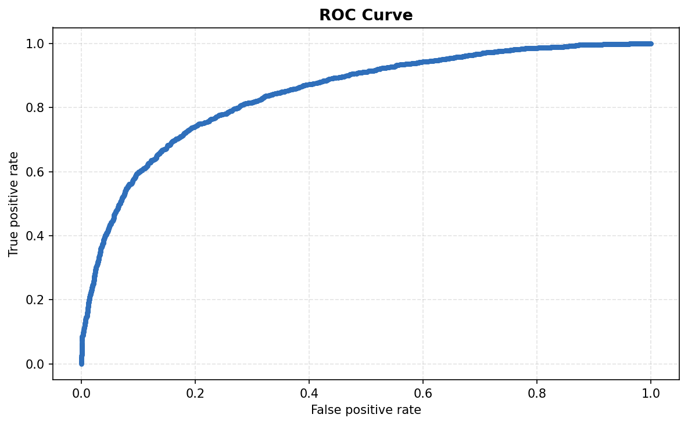
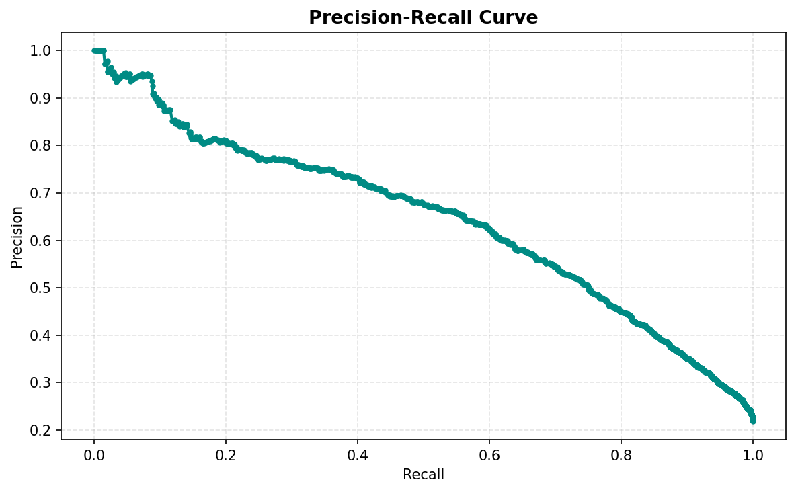
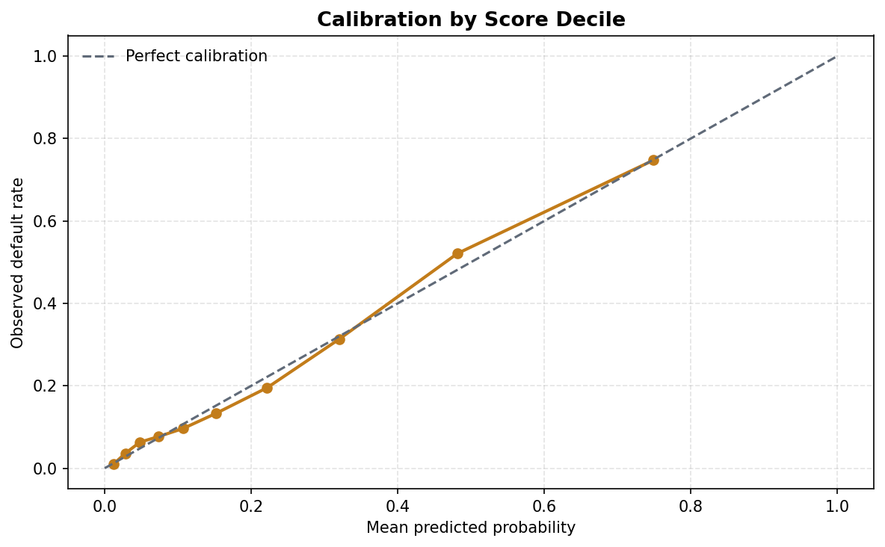
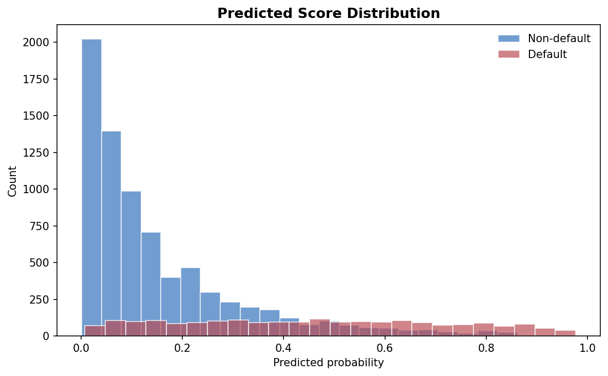
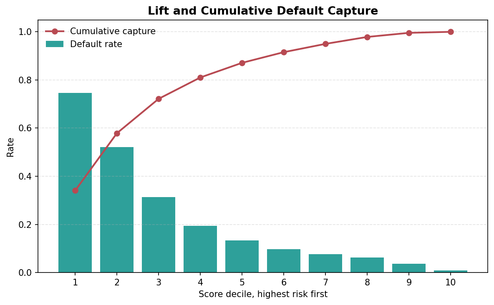
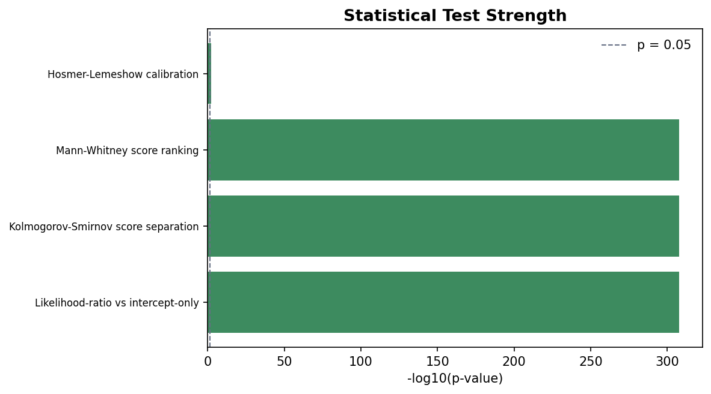
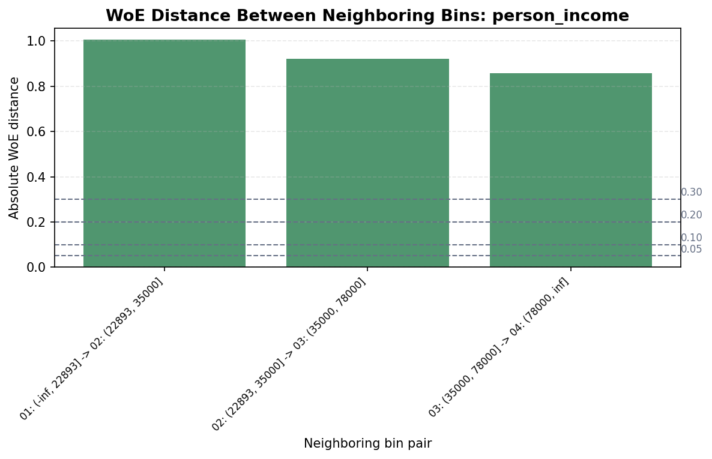
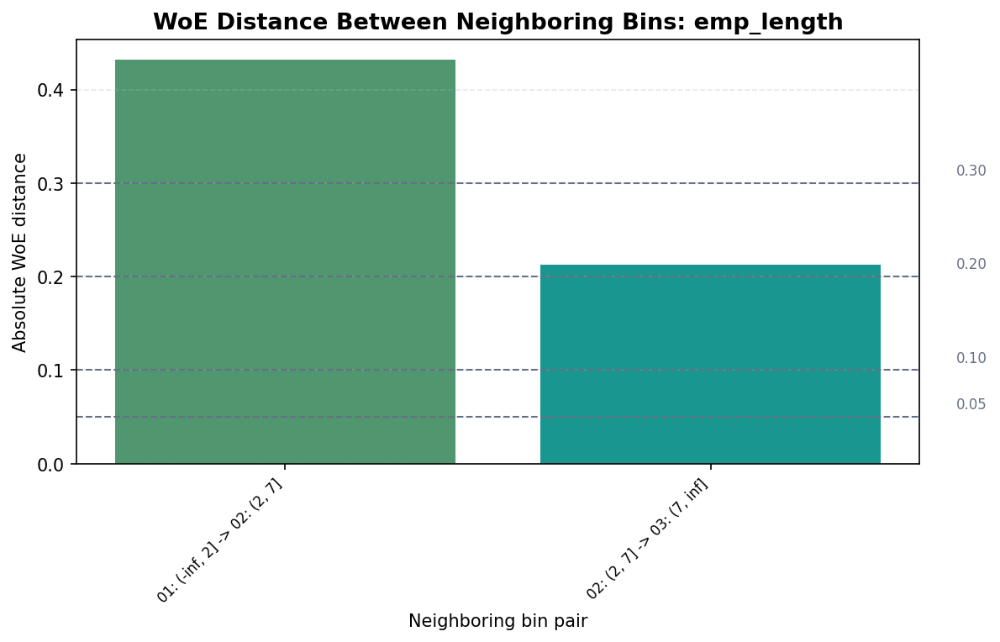
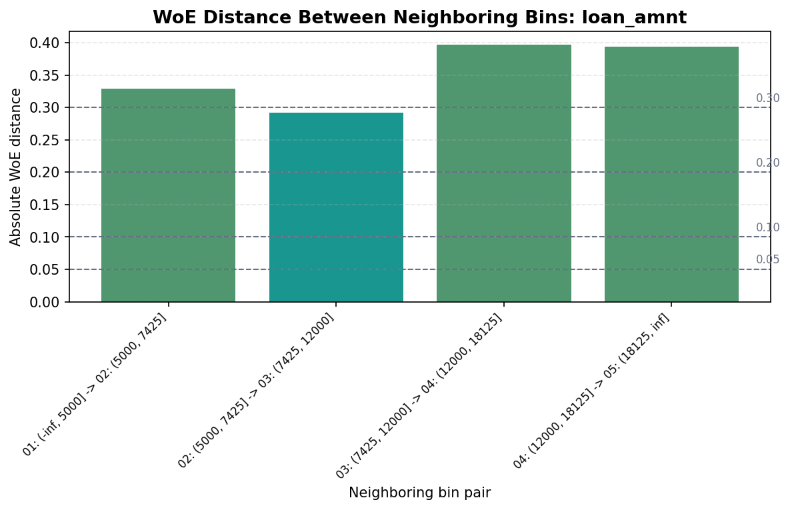
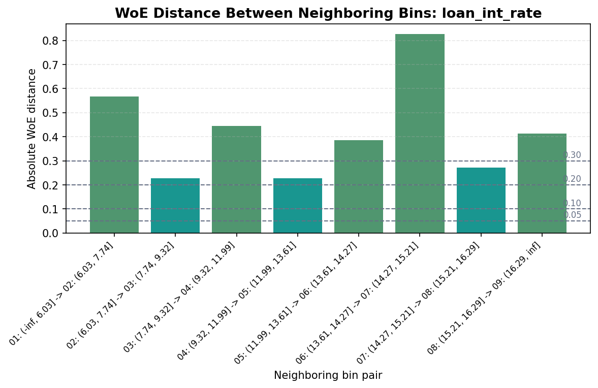
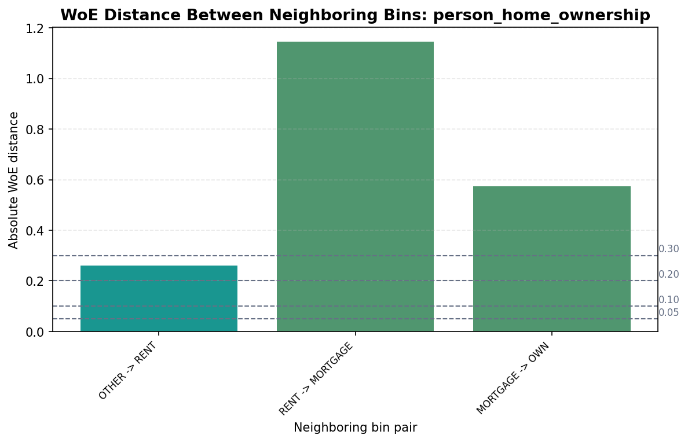
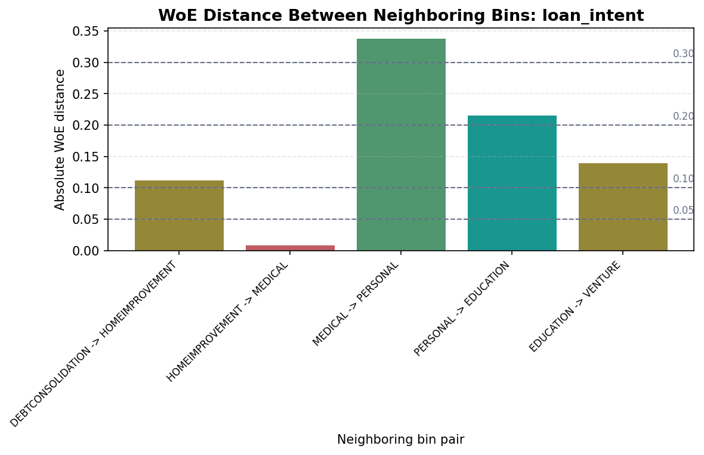
Model read: ROC AUC is 0.8337, KS is 0.5148, and Brier score is 0.1200.
Threshold: Selected 0.3407 using expected_profit_loss. The comparison-based recommendation is expected_profit_loss under the current payoff assumptions.
Statistical tests: 1 dummy-variable groups fail the LR screen and are candidates for grouped removal. 4 ungrouped indicators fail the Wald screen. Grouped calibration is statistically imperfect; score calibration should be monitored before deployment.